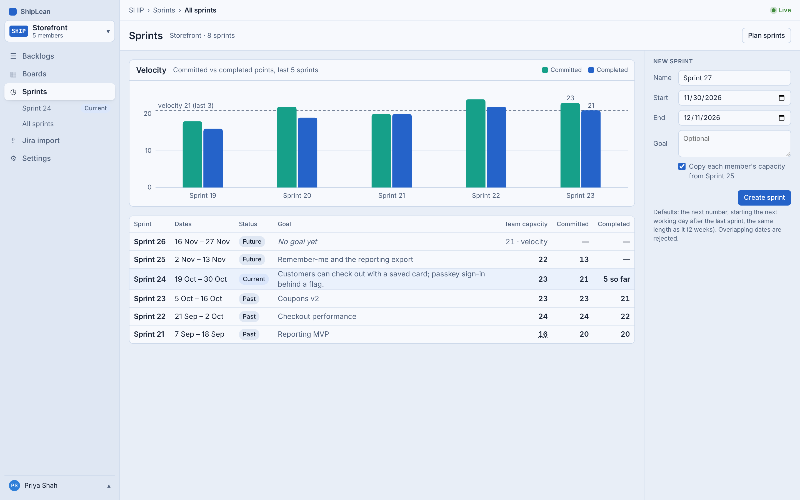
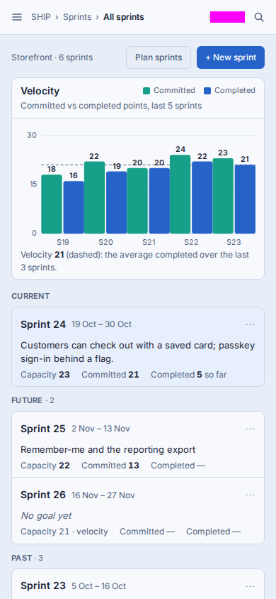
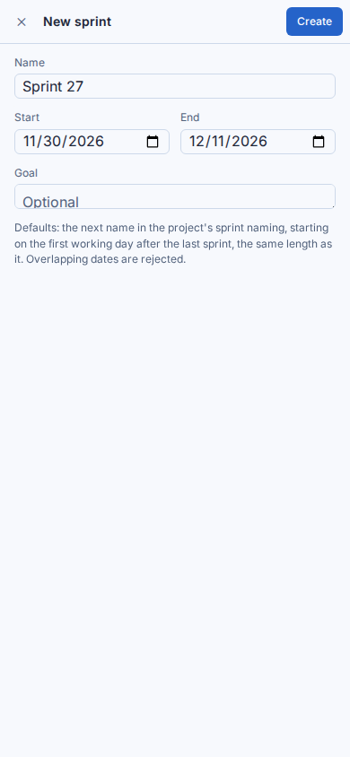

Sprints › All sprints at 900px and below, drawn at 390 × 844 on the reference screen screens/sprints.html (its touch layer is sprints-touch.css and sprints-touch.js). It sits in the SHIP-713 touch shell and follows the SHIP-805 rules as S0e1/S0e2 set them in tokens.css and shiplean.css; it overrides neither. The content is the desktop's: the velocity chart, every sprint with its dates, status, goal, team capacity, committed and completed, and the New sprint form. Above 900px nothing changes.
The desktop reference (1440px) and what is built on a phone (the page-shot baselines on the shared branch, 16 Nov), for orientation only: the design follows the rules and the desktop's content, not the build.



Each phone is the reference screen in one state; the P-numbers match the decisions below. Everything scrolls with the page except the top bar.
For wave 1's audit of the built phone page against this design. No server change; desktop unchanged.
| Piece | At 900px and below | Decision |
|---|---|---|
| Head | No "Sprints" heading (the top bar names the page). One row: "Storefront · 8 sprints", Plan sprints, + New sprint (primary), 32px. | P1 |
| Velocity | The card stays first, full width; the chart is drawn for the phone with every bar labelled (no hover), the velocity line dashed, a one-line caption with the number. | P3 |
| List | Sections Current, Future · n (soonest first), Past · n (newest first), each a card of rows. The current row keeps the desktop's tint. No status chips: the heading says it. | P2 |
| Row | Name and dates; the goal up to two lines ("No goal yet" in italics); Capacity · Committed · Completed with labels ("21 · velocity" when nobody entered capacity; "5 so far" on the current one); the capacity note as its own line. The whole row opens the sprint's Backlog; ⋯ (32px) opens its sheet. | P4, P8 |
| ⋯ sheet | The shared ActionSheet on K1: title = sprint name, subtitle = dates · status, Close. Group "Open": Backlog (value: committed pts), Taskboard, Capacity (value: team capacity), Retro and Demo (not on future sprints), each with ›. Then Edit sprint (hint "Name, dates and goal"), and Close sprint (hint, ›) on the current sprint only. Footnote on past sprints. | P6 |
| New sprint | Full screen, ✕ at the top left (as Edit sprint, SHIP-724 D9). Name; Start and End side by side (40px, 16px text) with the length under them; Goal; Copy each member's capacity as a switch row; the defaults hint. Save bar: "Not created yet" · Discard · Create sprint. An overlap is shown under the dates on Create, and the Save bar says why. | P5 |
| Empty | No chart and no head buttons: one panel, "No sprints yet", what a sprint is, + New sprint. New sprint then defaults to Sprint 1 with no dates and no Copy capacity. | P7 |